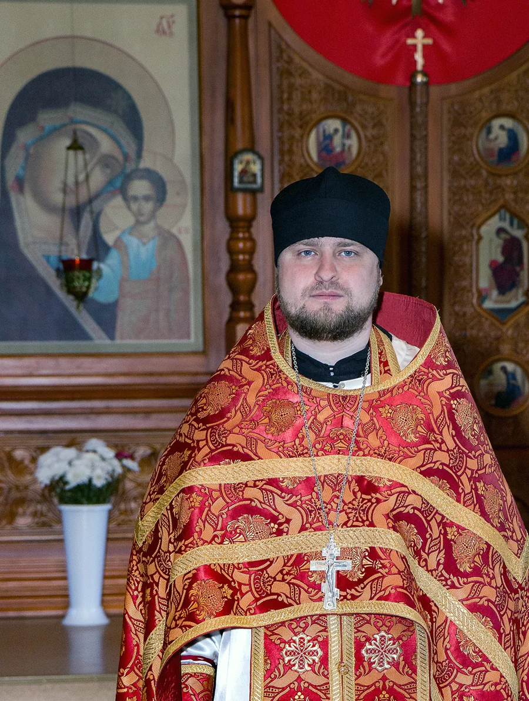

иерей

Бердск
История Сретенского прихода восходит к церкви Бердского острога 1716 года. В 1808 году был построен каменный храм с тремя престолами: Сретения, Богоявления и Успения. В 1939 году храм закрыли; территория старого Бердска впоследствии оказалась в зоне затопления.
Возрождение общины началось в феврале 1989 года. Первое богослужение прошло 1 августа в частном доме, затем приход обустроил временный храм на улице Лазо. Первая служба в нём состоялась 15 февраля 1990 года. В 1993 году открылась воскресная школа. Закладка нового Сретенского храма состоялась 16 сентября 2005 года.
Протоиерей Михаил Ширямов — настоятель; духовник службы «Шаг навстречу».
По расписанию на официальном сайте прихода, проверенному 18 октября 2026 года: по субботам и воскресеньям часы и Божественная литургия с 07:30; вечернее богослужение и исповедь — накануне воскресений и праздничных дней с 17:00. Воскресная школа для детей — в воскресенье в 10:00, для взрослых — в 14:00. Крещение по субботам и воскресеньям в 11:00, после подготовительной беседы в среду в 18:00. Среда, 17:30 — молебен о страждущих от зависимостей. Праздничные изменения публикует приход.
Ежедневно 08:00–18:00
В праздничные дни порядок богослужений может меняться. Перед поездкой уточните время в приходе.
При храме действует воскресная школа во имя Царственных страстотерпцев. Служба «Шаг навстречу» помогает пожилым людям, многодетным семьям, людям с инвалидностью и беременным женщинам: продуктами, одеждой, сопровождением и консультациями. Помощь и участие добровольцев согласуются со службой. Центр «100 друзей»: Бердск, микрорайон Радужный, 7, корпус 1.
Приход развивает направления «Жизнь в твоих руках», «Добрая дорога» и сестричество милосердия в честь иконы Божией Матери «Всех скорбящих Радость». Вместе с молодёжным центром «100 друзей» социальная служба собирает гуманитарную помощь. В храме проходят занятия воскресных школ для детей и взрослых.
Приход в честь Сретения Господня · Бердск
Знакомство детей с православной верой и приходской жизнью.
Дети; возрастные группы уточняются
О встречах и участииПриход в честь Сретения Господня · Бердск
Занятия для взрослых, желающих лучше понимать православную веру.
Взрослые
О встречах и участииПриход в честь Сретения Господня · Бердск
Подготовка к Крещению через беседу о вере и церковной жизни.
Готовящиеся к Крещению и их близкие
О встречах и участииНовости прихода можно найти в общей ленте.
Проверено 19 октября 2026 г.. Даты в исторических сообщениях не означают действующего расписания.